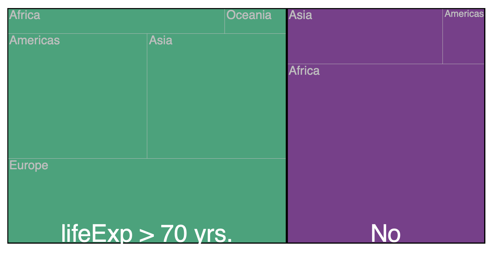
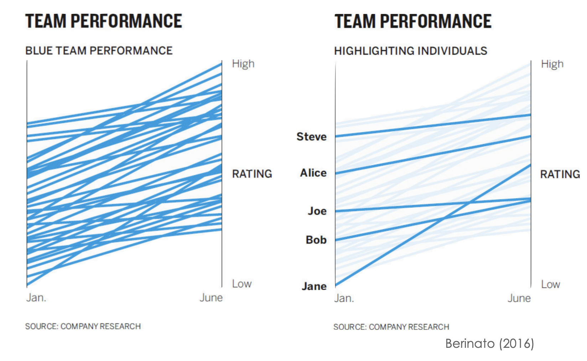

Week 3: Data Representation
ผศ.ดร.สิวะโชติ ศรีสุทธิยากร
ภาควิชาวิจัยและจิตวิทยาการศึกษา
คณะครุศาสตร์ จุฬาลงกรณ์มหาวิทยาลัย
2024-08-24
Outline
วันนี้จะกล่าวถึงแผนภาพพื้นฐาน (common charts) รวมทั้งแผนภาพที่เกี่ยวข้อง แผนภาพหลักที่จะกล่าวถึง ได้แก่
Bar Charts – amount
Pie Charts – composition
Line Charts – trend
Scatter plot – relationship
Histogram – distribution
Bar Charts
แสดง/เปรียบเทียบจำนวนข้อมูล/ปริมาณ
Bar Charts
- เป็น common charts ที่ใช้อย่างแพร่หลายมีวัตถุประสงค์การใช้สองลักษณะ ได้แก่
- การแสดงปริมาณข้อมูล (อาจมองว่าเป็นการแสดงการแจกแจงของตัวแปรจัดประเภท)
- การเปรียบเทียบข้อมูลระหว่างกลุ่มย่อย/เวลา
- bar chart บางประเภทยังสามารถนำเสนอและเปรียบเทียบสัดส่วนของข้อมูลได้ด้วย
Types of Bar Chart
Simple bar chart - แสดงปริมาณข้อมูลหรือแสดงแสดงการแจกแจงของตัวแปรจัดประเภท
Grouped bar chart - เปรียบเทียบหรือแสดงแนวโน้มของข้อมูลระหว่างกลุ่มย่อย/เวลา
Stacked bar chart - แสดง/เปรียบเทียบสัดส่วนของข้อมูล
Creating Simple Bar Chart
geom_bar()
เป็น geometry หลักสำหรับสร้าง bar chart โดยมี argument สำคัญได้แก่
datastat = countหรือidentityposition = stackหรือfillหรือdodgewidthorientation
Creating Grouped Bar Chart
geom_bar()
เป็น geometry หลักสำหรับสร้าง bar chart โดยมี argument สำคัญได้แก่
datastat = countหรือidentityposition = stackหรือfillหรือdodgewidthorientation
## เตรียมข้อมูล
data |>
filter(advisor == "สุชาดา บวรกิติวงศ์") |>
mutate(edu = factor(edu, labels=c("ป.โท","ป.เอก"))) |>
## data representation
ggplot(aes(y=depart, fill = edu))+
geom_bar(position = "dodge") +
## minor fine-tune plot
ylab(" ")+
xlab("\n จำนวน (เล่ม)")+
theme(text = element_text(family = "ChulaCharasNew"))+
ggtitle("\n Grouped Bar Chart")Creating Stacked Bar Chart
geom_bar()
เป็น geometry หลักสำหรับสร้าง bar chart โดยมี argument สำคัญได้แก่
datastat = countหรือidentityposition = stackหรือfillหรือdodgewidthorientation
## เตรียมข้อมูล
data |>
filter(advisor == "สุชาดา บวรกิติวงศ์") |>
mutate(edu = factor(edu, labels=c("ป.โท","ป.เอก"))) |>
## data representation
ggplot(aes(y=depart, fill = edu))+
geom_bar(position = "stack") +
## minor fine-tune plot
ylab(" ")+
xlab("\n จำนวน (เล่ม)")+
theme(text = element_text(family = "ChulaCharasNew"))+
ggtitle("\n Stacked Bar Chart")
Bar Charts: Order is Matter
แผนภาพไหนเหมาะสมมากกว่ากัน
แผนภาพไหนเหมาะสมมากกว่ากัน
สําหรับ stacked bar plot การเปรียบเทียบความแตกต่างระหว่าง category ที่ไม่ได้เริ่มจากเส้น y=0 ทําได้ยาก…
ระวัง
อย่าลืมว่า attribute สำคัญของ bar chart คือ ความยาว (length)
ระวัง
อย่าลืมว่า attribute สำคัญของ bar chart คือ ความยาว (length)
ระวัง
อย่าสร้างภาระให้กับผู้อ่าน
Related Charts: Visualize Amount
มีแผนภาพที่อยู่ในกลุ่มเดียวกับ bar chart หลายตัว
Dot plot
เหมือน barplot แต่เปลี่ยนจากการใช้ความยาวของแท่งสี่เหลี่ยมแทนข้อมูล เป็นการใช้จุดแทน
Dot plot
library(tidytext)
library(stringr)
data |>
filter(str_detect(advisor, "สุชาดา")) |>
select(year, software1, software2, software3) |>
mutate(across(starts_with("software"), str_trim, "both")) |>
mutate(across(starts_with("software"),
~str_replace_all(., pattern = "LISREL \\d+\\.\\d+", replace = "LISREL"))) |>
mutate(software1 = str_replace_all(software1, "MATLAB \\d+\\.\\d+", "MATLAB")) |>
mutate(software1 = str_replace(software1, "Fortran .*", "Fortran")) |>
mutate(software1 = str_replace(software1, "Microsoft .*", "VisualBasic")) |>
mutate(software2 = str_replace(software2, "GENOVA .*", "GENOVA")) |>
mutate(software2 = str_replace(software2, "Microsoft .*", "Access")) |>
mutate(software2 = str_replace(software2, "Lisrel", "LISREL")) |>
unite("software", software1:software3, sep = " ") |>
mutate(software = str_replace_all(software, "NA", ""),
software = str_trim(software)) |>
filter(software != "เชิงคุณภาพ") |>
unnest_tokens(output = "software", input = "software", to_lower = F) |>
group_by(software) |>
count() |>
ggplot(aes(x = reorder(software,n), y=n))+
geom_point(aes(size = n), col = "steelblue")+
geom_segment(aes(x = software, xend = software, y = 0, yend = n), col = "steelblue",
linetype = 2)+
coord_flip()+
xlab("")+
ylab("\n จำนวนเล่ม")+
labs(size = "จำนวนวิทยานิพนธ์") +
theme_light()+
theme(panel.border = element_blank(),
panel.grid = element_blank(),
panel.grid.major.x = element_line(color ="grey"),
text = element_text(family = "ChulaCharasNew", size = 14),
legend.position = "right")+
ggtitle("Software Used in Theses")Heatmap
เหมือนกับตารางข้อมูล ที่มีการใช้สีแทนปริมาณข้อมูล สามารถใช้ได้กับทั้งข้อมูล cross-sectional data และ time-series data
บางครั้ง heatmap สามารถนำเสนอข้อมูลที่มีปริมาณมากได้ดีกว่า bar chart และ dot plot
Heatmap
Pie Chart
แสดง/เปรียบเทียบสัดส่วนของข้อมูล
Pie Chart
| Objective | Pie Chart | Stacked Chart | Grouped Chart |
|---|---|---|---|
| เปรียบเทียบส่วนย่อยที่สนใจกับทั้งหมด | yes | yes | no |
| นำเสนอส่วนย่อยในรูปสัดส่วนอย่างง่าย เช่น 1/2, 1/3, 1/4 | yes | no | no |
| เปรียบเทียบปริมาณระหว่างส่วนย่อยหลายส่วน | no | no | yes |
| เปรียบเทียบสัดส่วนหลายชุดตามเวลา | no | yes | no |
Creating Pie Chart
การสร้าง pie chart ใน ggplot2 คือการสร้าง bar chart บนพิกัดเชิงขั้ว
ขั้นแรก : สร้าง stack bar chart ก่อน หากต้องการ label ชิ้นของ pie ให้ทำในขั้นตอนนี้
bar <- data |>
filter(advisor == "สุชาดา บวรกิติวงศ์") |>
count(edu) |>
mutate(edu = factor(edu, labels=c("ป.โท","ป.เอก"))) |>
ggplot(aes(x = 2, y= n, fill = edu))+
geom_bar(stat = "identity") +
geom_text(aes(
label = paste0(edu,"\n",n,"เล่ม")),
position = position_stack(vjust = 0.5),
family = "ChulaCharasNew", size = 9) +
ylab(" ")+
xlab("\n จำนวน (เล่ม)")+
theme(text = element_text(family = "ChulaCharasNew", size = 17))
barCreating Pie Chart
ขั้นที่สอง : ปรับพิกัดจาก cartesian ให้เป็น polar coordinate ด้วยฟังก์ชัน coord_polar() หากความถี่หรือสัดส่วนที่ต้องการนำไปสร้างขนาดชิ้น pie อยู่บนแกน y ให้กำหนดอาร์กิวเมนท์ theta = y
Donut Chart
ระวัง
ระวัง
หลายกรณี pie chart ไม่สามารถนำเสนอความแตกต่างระหว่างสัดส่วนย่อยต่าง ๆ ได้อย่างมีประสิทธิภาพ
ระวัง
ระวังการใช้ pie chart กับสัดส่วนย่อยจำนวนมากเกินไป และการใช้ pie chart ผิดประเภท
ระวัง
Related Charts: Visualize Composition/Proportion
100% Stacked Bar Charts
Treemap: Visualizing Nested Proportion
แผนภาพ Treemap เป็น visualization ตัวหนึ่งที่มีประสิทธิภาพในการนําเสนอการแจกแจงความถี่หลายทาง

Creating Treemap
Creating Treemap (nested proportion)
data |>
mutate(edu = factor(edu, labels=c("ป.โท","ป.เอก"))) |>
group_by(depart, edu) |>
count() |>
ggplot(aes(area = n,
fill = depart,
subgroup = edu)) +
geom_treemap()+
geom_treemap_text(aes(label = depart),
padding.y = grid::unit(3, "mm"),
col = "black", family = "ChulaCharasNew")+
geom_treemap_subgroup_border(col = "black")+
geom_treemap_subgroup_text(family = "ChulaCharasNew",
padding.y = grid::unit(5.5, "cm"),
col = "white",
size = 80, alpha = 0.6)+
theme(legend.position = "none")Line Charts
แสดงแนวโน้มตามเวลา
Line Charts
data |>
filter(advisor == "สุชาดา บวรกิติวงศ์") |>
group_by(year) |>
count() |>
ggplot(aes(x=year, y=n, group = 1))+
geom_line(stat = "identity", fill ="#021526")+
geom_point()+
theme_classic()+
theme(panel.grid.major.y = element_line(color = "grey90", linetype = 2),
axis.text = element_text(size = 14),
axis.title = element_text(size = 16),
plot.title = element_text(size = 15, face = "bold"),
text = element_text(family = "ChulaCharasNew")) +
ylab("\n จำนวน (เล่ม) \n ")+
xlab("")+
ylim(0,7)+
ggtitle("\n จำนวนวิทยานิพนธ์ที่ อ.สุชาดา เป็นที่ปรึกษาหลัก")Multiple Line Charts
Multiple Line Charts
แผนภาพด้านล่างมีข้อสังเกตอะไรหรือไม่
data |>
mutate(edu = factor(edu, labels=c("ป.โท","ป.เอก"))) |>
filter(advisor == "สุชาดา บวรกิติวงศ์") |>
group_by(year, edu) |>
count() |>
ggplot(aes(x=year, y=n, col = edu))+
geom_line(stat = "identity")+
geom_point()+
theme_classic()+
theme(panel.grid.major.y = element_line(color = "grey90", linetype = 2),
axis.text = element_text(size = 14),
axis.title = element_text(size = 16),
plot.title = element_text(size = 15, face = "bold"),
text = element_text(family = "ChulaCharasNew")) +
ylab("\n จำนวน (เล่ม) \n ")+
xlab("")+
ylim(0,7)+
ggtitle("\n จำนวนวิทยานิพนธ์ที่ อ.สุชาดา เป็นที่ปรึกษาหลัก")Multiple Line Charts & Heatmaps
ในกรณีที่มีหน่วยข้อมูลจำนวนมาก การใช้ heatmap อาจมีประสิทธิภาพในการสื่อสารมากกว่า line chart
Related Charts: Trends
Dot plots
Slope plots
Dot Plot
dotplot สามารถใช้แสดงพัฒนาการ หรือการเปลี่ยนแปลงของตัวแปรระหว่างจุดเวลาสองจุดได้
Slope Plot


week 3: 2758686 Data Visualization
ผศ.ดร.สิวะโชติ ศรีสุทธิยากร